| Name | Roll No. |
|---|---|
| Shubham Sharma | 2023BCS-062 |
| Ajay Singh | 2023BCS-004 |
October 2026
Torrent networks generate large, publicly observable activity data that is rarely measured systematically across media types. We built a big-data platform that studies piracy activity for movies, TV and games using only public metadata: no copyrighted content was downloaded and no peer IP addresses were stored. The batch layer ingests the RARBG catalog dump (2.84 million torrents, 2007–2023), IMDb (184.7 million rows), one week of hourly Wikipedia pageviews (1.15 billion rows), the Kaggle Steam games dataset and TMDB release dates, cleans them with Apache Spark into partitioned Parquet, and joins them into analysis tables. The speed layer scrapes live seeder/leecher counts from five public BitTorrent trackers using the UDP scrape protocol (BEP 15), streams them through Apache Kafka into Spark Structured Streaming, and serves them to Grafana through PostgreSQL; on 10 October 2026 it collected 25.4 million observations in 10.4 hours with no data loss. A one-pass scan of all 1.39 million catalog torrents added a complete cross-section of current swarm sizes.
Key findings: (1) piracy now follows legal release almost immediately — for films released 2020–2023, 66–70 % were on RARBG by the day after their legal digital release, almost always as a WEB copy, and 18–25 % appeared before it; new TV episodes appeared a median of 1 day after the premiere; (2) a film's swarm shrinks with age as a power law (seeders ∝ age−0.73), while TV series and games do not decay; (3) for Steam games, free-to-play titles are almost never pirated (5 %) while paid games are pirated at about 50 %, dropping to 38 % above $40, and an MLlib logistic model predicts piracy with a test AUC of 0.83; (4) Sci-Fi and Horror films get ~56–59 % more torrent versions than equally popular films, Romance 18 % fewer; (5) Wikipedia interest correlates moderately with current seeders (Spearman ρ = 0.47 for movies). All results are associations, not causal effects.
BitTorrent trackers publish, for every torrent, how many peers currently hold the full file (seeders), how many are downloading (leechers) and how many downloads have completed. Combined with a catalog of what each torrent is, this public data can measure piracy across media types at scale. The project set out to build a scalable pipeline for this data and to answer six questions:
A seventh analysis (A7) uses the streaming data to describe how swarms change over a day.
Only metadata was processed: catalog titles and infohashes, aggregate counts returned by tracker scrape requests, and public film/game/encyclopaedia datasets. The scraper never downloads content and never requests peer lists, so no IP addresses are collected. The project was executed in about one week on a single laptop (12 cores, 15 GB RAM), which led to the scope changes below.
| Proposal | Delivered | Reason |
|---|---|---|
| Self-hosted DHT crawler | Dropped; RARBG dump + full tracker scan instead | The dump already gives 2.84 M identified torrents; a DHT crawler needs weeks |
| Hourly tracker scrapes over months | Back-to-back scrapes for one day (10 Oct 2026, 10:36–21:00 IST) + one full-catalog scan | Time available; machine could only run unattended for one day |
| Music category, Spotify charts | Dropped | Little music on RARBG (108 k torrents, no IDs); Spotify API restricted |
| Apache Hive warehouse | Spark SQL over Parquet | Same SQL capability without a metastore |
| Apache Airflow | Shell runners (run_phase2.sh, run_final.sh) + cron | Linear pipeline; Airflow overhead not justified |
| Superset / Grafana | Grafana (live + batch dashboards) on PostgreSQL | One tool for both layers |
| HDFS | Defined in Docker Compose but not used; Parquet on local disk | Single machine; HDFS adds no parallelism here |
| — | Added: Wikipedia pageviews (1.15 B rows), TMDB API, Steam, PostgreSQL serving layer | Interest signal, release dates, prices |
| Source | Content | Rows (clean) | Raw size | Period | Obtained via |
|---|---|---|---|---|---|
| Wikimedia pageviews | Hourly views of every page of every Wikimedia project | 1,153,632,847 | 9.9 GB | 1–7 Sep 2026 | 168 hourly dump files |
| IMDb non-commercial datasets | Titles, ratings, alternative titles, cast/crew, episodes | 184,661,759 | 1.5 GB | current | TSV downloads |
| RARBG catalog dump | Infohash, release name, category, upload time, size, IMDb id | 2,843,691 | 776 MB | Jun 2007 – May 2023 | SQLite, Internet Archive (MD5-verified) |
| Steam games (Kaggle) | Price, release date, reviews, owners, genres, tags | 125,854 | 1.3 GB | snapshot Oct 2026 | CSV download |
| TMDB API | Release dates per country and type, budget, revenue | 13,462 titles · 212,933 dates | 20 MB | films/TV 2005–2023 | REST API (own fetcher) |
| Tracker scrapes — live | Seeders, leechers, completed per torrent per tracker | 25,422,936 | 0.6 GB | 10 Oct 2026, 10:36–21:00 IST | BEP 15 UDP scraper → Kafka |
| Tracker scrapes — full scan | One observation per catalog torrent (opentrackr) | 1,385,068 | 0.25 GB | 10 Oct 2026, 11:41–12:29 IST | Same scraper, 4 parallel workers |
| Total | ≈ 1.38 billion | ≈ 14 GB | Data lake on disk ≈ 34 GB (raw + Parquet) | ||
The TMDB fetch targeted the 8,000 most-voted movies and 2,000 most-voted series from IMDb (released 2005–2023) plus 3,481 Indian-language films found through TMDB's discover endpoint, because the IMDb ranking is dominated by English-language titles.
The system follows the Lambda architecture: a batch layer recomputes analysis tables from immutable raw data, a speed layer processes live tracker observations with low latency, and a serving layer exposes both to dashboards. Everything runs on one machine; Kafka, PostgreSQL, Grafana and the two scraper workers run in Docker Compose, Spark runs in local mode on all 12 cores.
| Technology | Role | How it is used |
|---|---|---|
| Apache Spark 4.0 (PySpark) | Batch processing | All ETL and joins; reads gzip dumps, SQLite exports, CSV/JSON; writes Parquet. mapInPandas parallelises Python title parsing. |
| Spark SQL | Querying | All analyses (window functions, pivots, percentiles) over temp views of Parquet tables. |
| Spark Structured Streaming | Stream processing | Kafka source → Parquet sink (append) and foreachBatch sink to PostgreSQL, one-minute triggers, checkpointed. |
| Spark MLlib | Modelling | Poisson GLM (decay), logistic regression and random forest (games), OLS (genres), Spearman correlation (interest). |
| Apache Kafka 3.9 (KRaft) | Ingestion buffer | Topic tracker.scrapes, 6 partitions, 7-day retention; decouples scrapers from Spark. |
| Apache Parquet | Storage | Columnar, zstd-compressed, partitioned by date / category / title type. |
| PostgreSQL 16 | Serving | Per-minute stream aggregates, latest swarm per torrent, batch results for Grafana. |
| Grafana 13 | Visualisation | Live dashboard (refreshes every minute) and batch dashboard, provisioned from JSON. |
| Docker Compose | Environment | One-command start of Kafka, PostgreSQL, Grafana and the scraper workers. |
ingest/download_*.sh): resumable wget -c; the RARBG dump is checked against its published MD5.ingest/fetch_tmdb.py): 20 threads behind a shared 35 requests/s rate limiter, retry on HTTP 429/5xx, resumable JSONL output. 10,000 titles in 12 minutes; 9,956 matched.ingest/tracker_scraper.py): implements the BEP 15 UDP protocol (connect → connection id → scrape of up to 74 infohashes per packet). Each tracker runs its own loop so a slow or dead tracker never delays the others; trackers that reject large packets get smaller batches (exodus: 50); a tracker returning nothing backs off for 10 minutes. Every row goes to Kafka and to an hourly JSONL backup.mapInPandas on 12 workers: 2.84 M names in 60 minutes.home_release_date.try_cast / try_to_timestamp so bad values become null and are filtered.The streaming job reads Kafka from the earliest offset with at most 2 M records per trigger. One query appends raw rows to stream/swarm (Parquet, partitioned by date); a second uses foreachBatch to upsert per-minute aggregates and the latest observation per torrent into PostgreSQL. Each micro-batch id is inserted into a ledger table in the same transaction as the data, so a batch replayed after a crash is skipped: output to PostgreSQL is exactly-once (verified by deleting the checkpoint and replaying). Live collection used two scraper tiers: 16,555 torrents known to be alive, scraped about every 2 minutes, and 110,036 further alive torrents found by the full scan, every 11–20 minutes. A graceful stop at 21:00 stopped the scrapers, let Spark drain Kafka for three minutes and stopped the stream: Kafka's 25,422,936 messages equal the rows written, and no gap longer than five minutes occurred.
Title_(YEAR_film), Title_(film), Title) are broadcast-joined against English pageviews; the most specific page with views wins. The 1.15 B-row table is filtered in one minute. Single-word bare names are flagged low-confidence (e.g. the game “Krakatoa” matched the volcano) and excluded.| Job | Input | Output | Wall time |
|---|---|---|---|
| Wikipedia ETL | 9.9 GB gzip | 1,153,632,847 rows | 20.2 min |
| IMDb ETL (4 tables) | 1.5 GB gzip | 184,661,759 rows | 7.3 min |
| RARBG ETL incl. guessit parsing | 2.84 M names | 2,843,691 rows | 60.0 min |
| Torrent enrichment (IMDb + TMDB + Steam joins) | 1.39 M torrents | 1,390,470 rows | 35 s |
| Wikipedia interest join | 1.15 B rows | 57,284 titles | 1.0 min |
| Full catalog tracker scan (4 workers) | 1,390,470 hashes | 1,385,068 rows | 48 min |
| Live collection (2 scrapers → Kafka → Spark) | 10.4 h | 25,422,936 rows | peak 3.56 M rows/h |
| Swarm summaries after collection | 25.4 M rows | 6.46 M slots | 72 s |
| All analyses A1–A7 incl. MLlib | curated tables | 12 figures, 21 tables | ≈ 3 min |
| Validation (26 checks) | all layers | 26 / 26 pass | 2.7 min |
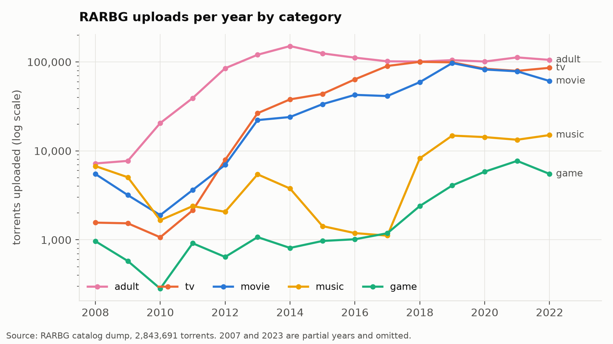
TV uploads grew from 1,068 in 2010 to about 100,000 per year from 2018, overtaking adult content; movies reached about 60,000 per year. Game uploads rose steadily to 5,500–7,700 per year. Release quality shifted sharply: 1080p went from 2 % of movie uploads in 2008 to 62 % in 2022, 4K reached 8 %, and x265/HEVC encoding jumped from 1 % (2019) to 30 % (2022) once streaming services offered HEVC sources.
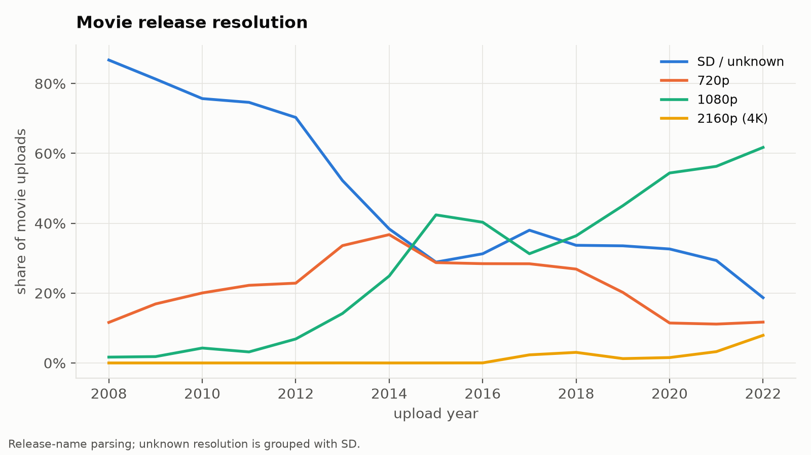
The dump only contains torrents still listed in May 2023, and RARBG replaced old releases over time, so for films released before about 2017 the earliest torrent in the dump is often years after the real first release (median 3,363 days for 2009 films). Leak lag is therefore measured for the 1,953 films released January 2018 – March 2023 that have TMDB dates.
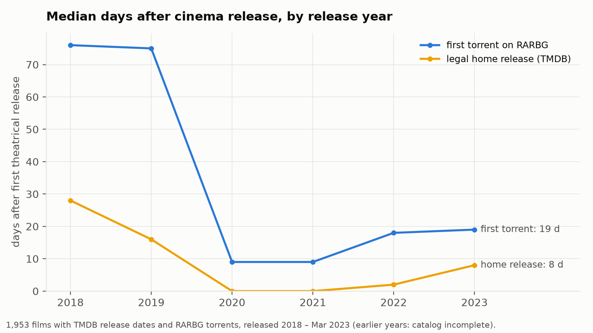
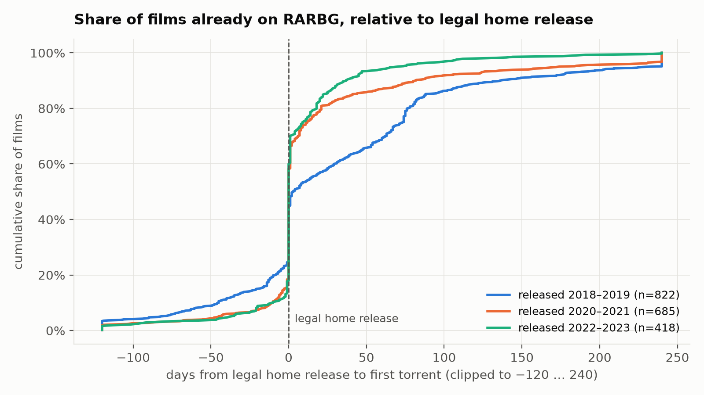
The full catalog scan found 124,476 of 1,385,068 movie/TV/game torrents alive (9.0 %). Per torrent, older uploads look healthier than recent ones (Figure 6, left) — an artefact of survivorship (unpopular old releases were deleted) and of version splitting (new titles spread seeders over WEB, Blu-ray, 4K and repacks). We therefore modelled decay per title, summing seeders over all versions, with MLlib Poisson regressions on titles released 2012–2023 and compared exponential and power-law forms by AIC.
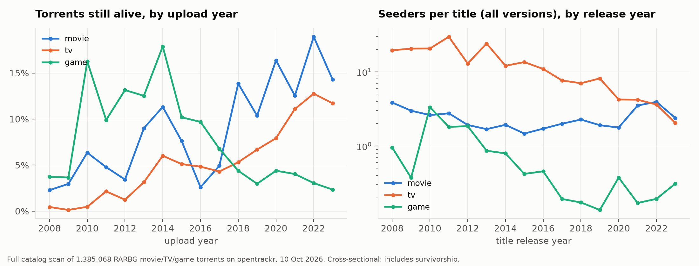
| Category | Titles | Best model (AIC) | Interpretation |
|---|---|---|---|
| Movie | 34,632 | power law, seeders ∝ age−0.73 | a 10-year-old film keeps ≈ 41 % of the seeders of a 3-year-old film |
| TV | 10,301 | power law, exponent +1.65 | no decay: long-running series accumulate seasons and stay shared |
| Game | 10,871 | exponential, +16 %/year | no decay: classic games persist, new ones are split across many updates |
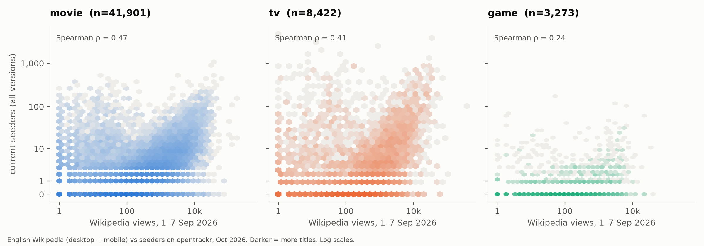
Interest and piracy are positively but moderately related: Spearman ρ between weekly views and current seeders is 0.47 for 41,901 films, 0.41 for 8,422 series and 0.24 for 3,273 games. Correlation with the number of torrent versions is weaker (ρ ≈ 0.21–0.26), because versions reflect 2007–2023 upload activity rather than current interest. Many widely read titles have small swarms, so encyclopaedic interest is only a partial proxy for piracy demand.
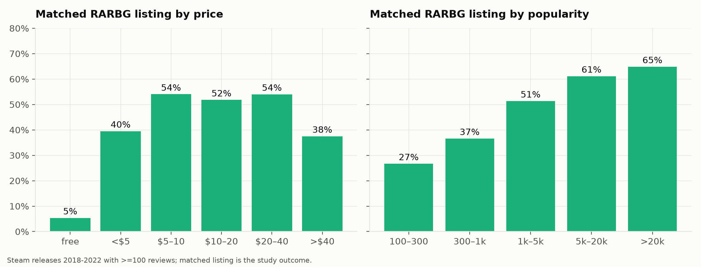
38.5 % of the 9,283 games are on RARBG. Free-to-play games are almost never pirated (5 %, nothing to gain), paid games between $5 and $40 at 52–54 %, and games above $40 at 38 % — plausibly because AAA titles more often ship with strong DRM that delays cracking, though DRM is not in our data. Piracy rises steadily with popularity (27 % → 65 %). In an MLlib logistic regression on standardised features (80/20 split, test AUC 0.83), popularity (odds × 1.84 per SD), single-player (× 1.79) and price (× 1.55) increase piracy; Early Access (× 0.51), free-to-play (× 0.54), Casual (× 0.71) and MMO (× 0.77) decrease it. A random forest predicting log(torrent count) reaches test R² = 0.35, with popularity and price as the two most important features.
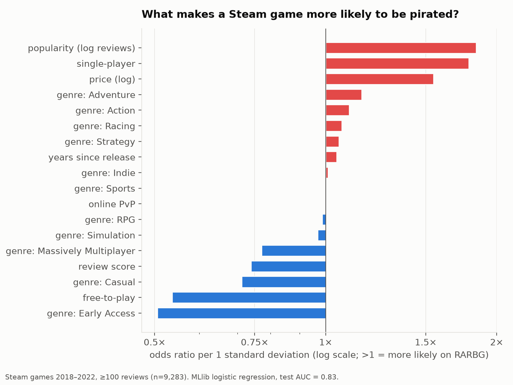
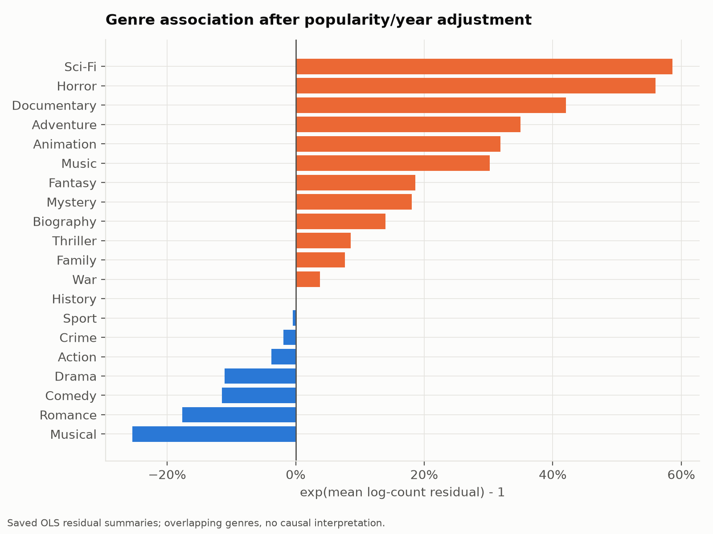
For all 8,024 IMDb films of 2018–2022 with ≥ 1,000 votes (including the 2,507 with no torrent), an MLlib OLS model of log(1 + torrent versions) on log(votes) and release year explains 19 % of variance; each extra 1 % of votes brings ≈ 0.36 % more versions. Residuals by genre show Sci-Fi (+59 %), Horror (+56 %), Documentary (+42 %) and Adventure (+35 %) pirated well above their popularity, and Romance (−18 %), Comedy (−12 %) and Drama (−11 %) below. Genre is partly confounded with language and market (English-language genre films are more likely to be on an English-language site).
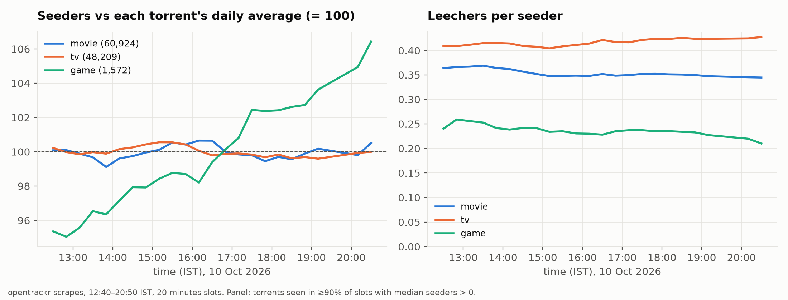
Movie and TV swarms are remarkably stable over the observed window (within ±1.5 % of their daily mean), whereas game swarms grew about 11 % from Indian midday into the European afternoon and US morning. Leechers per seeder are steady: 0.42 for TV, 0.35 for movies and 0.24 for games, i.e. TV is the most "in-demand" medium relative to supply. Across the alive torrents, opentrackr recorded about 5,460 completed movie downloads, 1,730 TV and 240 game downloads per hour. One day cannot show whether the game pattern repeats.
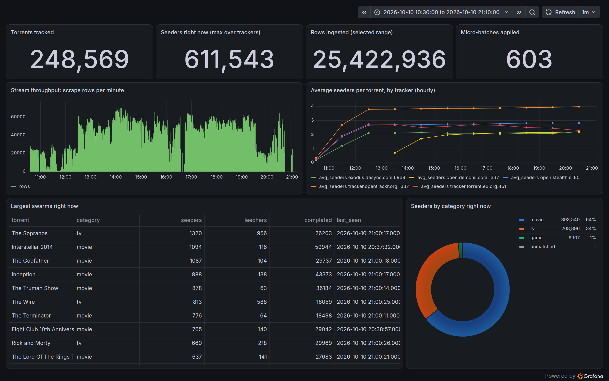
analysis/validate.py runs 26 automated checks across every layer (all pass). They establish that nothing was lost between sources and Parquet, that the streaming path is complete and exactly-once, that the tracker measurements are consistent, and that joined dates and parsed titles agree with known facts. Model quality is measured on held-out data.
| What is checked | Expected | Observed | Result |
|---|---|---|---|
| RARBG SQLite rows → staging rows; infohashes unique | 2,843,691 | 2,843,691 | exact |
| Wikipedia raw lines → staging rows (168 of 168 hours) | 1,153,725,864 | 1,153,632,847 | 93,017 malformed lines dropped (0.008 %) |
| IMDb basics / akas / principals / episode raw → staging | 184,661,759 | 184,661,759 | exact, all four tables |
| Steam CSV rows → staging (dedup by app id) | 125,855 | 125,854 | 1 duplicate dropped |
| TMDB fetched records → staging titles | 13,462 | 13,462 | exact |
| Kafka messages = PostgreSQL batch ledger = Parquet rows (Kafka end offsets measured 21:45 IST, 10 Oct) | 25,422,936 | 25,422,936 = 25,422,936 | zero loss |
| Micro-batches applied twice (exactly-once) | 0 | 0 of 603 | pass; replay test also passed |
| JSONL backup lines vs Parquet | 25,422,936 | 25,421,825 | backup buffer not flushed at forced stop (0.004 %); primary path complete |
| All live observations inside the collection window; no negative counts | 10:36–21:01 IST | 10:35–21:00 IST | pass |
| Two independent trackers agree on the same swarm (opentrackr vs stealth.si, 20-min slots) | ρ > 0.7 | ρ = 0.736 (3.30 M pairs) | measurements are consistent |
| Full-catalog scan agrees with live scrapes of the same torrents | ρ > 0.8 | ρ = 0.977 (248,019 torrents) | scanner reproducible |
| Theatrical dates: Inception, Avengers: Endgame, The Dark Knight, Interstellar | public record | 4 / 4 within ±1 day | joins and date logic correct |
| Release-name parsing (Inception 2160p releases, The Mandalorian S01E01) | title, year, S/E, resolution | 4 / 4 correct | guessit output correct |
| Model | Validation | Metric |
|---|---|---|
| Game piracy, logistic regression (A5) | 80/20 train/test split, seed 42 | test AUC 0.826 |
| Game torrent count, random forest, 200 trees (A5) | same split | test R² 0.348, RMSE 0.644 (log scale) |
| Genre excess piracy, OLS (A6) | 95 % confidence intervals per genre | R² 0.193; Sci-Fi/Horror CI exclude 0 |
| Decay, Poisson GLM (A3) | exponential vs power law compared by AIC | power law better for movies (ΔAIC 567) |
| Steam matching (A5) | manual check of 35 random matches | 34 / 35 correct |
| Wikipedia matching (A4) | manual check of top matches; low-confidence flag | 3,787 ambiguous matches excluded |
| Problem | Effect if unfixed | Fix |
|---|---|---|
| PySpark converts collected timestamps to the machine's local zone (IST) before writing to PostgreSQL | All stream aggregates 5 h 30 min late | Force the Python process and Spark session to UTC |
Steam CSV header merges Discount and DLC count (39 names, 40 values per row) | Every column after Price shifted by one | Ignore the header, supply a 40-column schema |
| Spark 4 ANSI mode aborts on one bad cast | Billion-row jobs fail on a single malformed line | try_cast / try_to_timestamp everywhere |
| US digital release dates missing (pre-2013) or late re-releases (e.g. 2012 film → 2024) | Leak lag wrong or undefined for most films | Home release = earliest digital/physical date in any country after theatrical |
| RARBG dump incomplete before ~2017 | Leak lag of years for older films | Restrict leak-lag analysis to 2018+ releases |
| Ambiguous Wikipedia page names | Game "Krakatoa" credited with volcano's views | Most-specific page first; confidence flag; drop low |
| Scraper gave up on a tracker after 10 scattered timeouts; one tracker rejects > 60 hashes per packet; slowest tracker gated every round | 3 of 5 trackers returned nothing; rounds 4× slower | Consecutive-error limit, per-tracker batch size, independent loops per tracker |
| Swarm size = max over trackers; tier-2 torrents selected because they were alive at noon | Intra-day curve showed tracker outages and regression to the mean, not real change | Single tracker, fixed panel of torrents alive for most of the day, per-torrent normalisation |
| Moving Kafka's log onto its Docker volume after collection recreated the container | The buffered topic (a transport copy of the stream) was dropped | No data lost: Parquet, the batch ledger and JSONL hold every row; the Kafka count measured before the change is kept in kafka_offsets_snapshot.json |
| Per-torrent decay mixed survivorship and version splitting | "Older torrents have more seeders" | Model decay per title, summing all versions |
We built and ran an end-to-end Lambda pipeline that combines a 1.38-billion-row batch data lake with a live Kafka → Spark Structured Streaming feed of 25.4 million tracker observations, delivered exactly-once into a PostgreSQL serving layer and two Grafana dashboards, on a single laptop. The data show that piracy now follows legal digital release within a day for most films, that film swarms decay as a power law while TV and games persist, that free and online-only games are rarely pirated while popular single-player games are, and that Sci-Fi and Horror are pirated well beyond their popularity. Natural extensions are a weeks-long scrape to study daily and weekly cycles and true decay, a DHT crawler to see peers beyond trackers, DRM metadata (e.g. PCGamingWiki) to test the DRM hypothesis directly, and running the same jobs on a multi-node Spark/HDFS cluster.
| Table | Rows | Key | Main columns |
|---|---|---|---|
| staging/wiki_pageviews | 1,153,632,847 | page, hour | project, page_title, views, hour (partitioned by date) |
| staging/imdb_principals · akas · titles · episodes | 102.2 M · 59.7 M · 12.8 M · 9.9 M | tconst | cast/crew; localised titles; type, year, genres, rating, votes; series links |
| staging/torrents | 2,843,691 | infohash | title, category, added_at, size, imdb_id, guessit fields |
| staging/swarm_fullscan | 1,385,068 | infohash | seeders, leechers, completed, scraped_at |
| staging/tmdb_titles · tmdb_release_dates | 13,462 · 212,933 | imdb_id | theatrical / digital / physical / home-release dates (any country, US, India), budget, revenue |
| staging/steam_games | 125,854 | app_id | price, owners, reviews, review score, genres, categories, tags |
| stream/swarm | 25,422,936 | infohash, tracker, time | seeders, leechers, completed, scraped_at |
| curated/torrents_enriched | 1,390,470 | infohash | torrent + IMDb + TMDB + Steam columns; days from release to upload |
| curated/swarm_slots · swarm_torrent_day | 6,459,735 · 248,569 | infohash (, slot) | 10-min swarm size; per-torrent day statistics and download rate |
| curated/wiki_interest · wiki_daily | 57,284 · 362,477 | entity | matched page, weekly / daily views, match confidence |
Full column definitions: docs/schema.md in the repository.
uv sync # Python env: PySpark 4.0, guessit, kafka, psycopg docker compose -f infra/docker-compose.yml up -d # Kafka :9092, PostgreSQL :5432, Grafana :3000 ingest/download_imdb.sh; ingest/download_wiki_pageviews.sh 2026-09-01 7; ingest/download_rarbg.sh uv run python -m ingest.fetch_tmdb; uv run python -m ingest.fetch_tmdb_india # needs TMDB_TOKEN in .env etl/run_phase2.sh # Wikipedia, TMDB, IMDb, RARBG -> staging Parquet uv run python -m etl.steam; uv run python -m etl.curate_torrents --pg; uv run python -m etl.curate_wiki ingest/run_fullscan.sh # one pass over all catalog torrents docker compose -f infra/docker-compose.yml --profile scraper up -d # live scrapers streaming/run_stream.sh start; streaming/stop_at.sh 21:00 & # Structured Streaming + scheduled stop analysis/run_final.sh # summaries, A1–A7, figures, Grafana tables
common/ Spark session factory (UTC, zstd), data paths, .env loader ingest/ downloaders, TMDB fetchers, BEP 15 tracker scraper, scrape-target builders etl/ Spark jobs: raw -> staging (wiki, imdb, rarbg, steam, tmdb), staging -> curated (joins, swarm, wiki) streaming/ Structured Streaming job, start/stop/scheduled-stop/reboot-recovery scripts analysis/ A1–A7 (Spark SQL + MLlib), shared figure style, final runner, results/*.csv dashboards/ results -> PostgreSQL loader, Grafana batch dashboard generator infra/ Docker Compose, PostgreSQL schema, Grafana provisioning and dashboards, scraper image docs/ dataset schema report/ this report, figures dataset/ raw/ staging/ curated/ stream/ (≈ 34 GB, not in git)